Producer prototype
The current coded prototype, in scroll order from top to bottom.

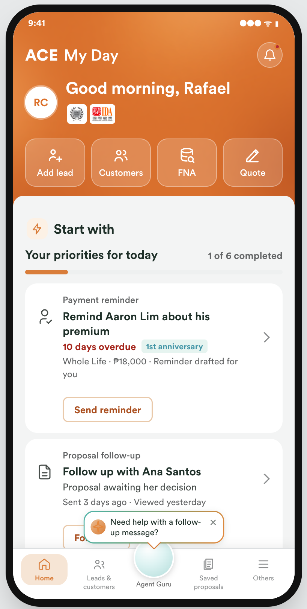
prototype-1-header-start-with.png
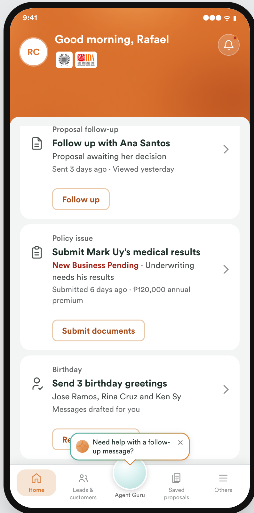
prototype-2-start-with-tasks.png
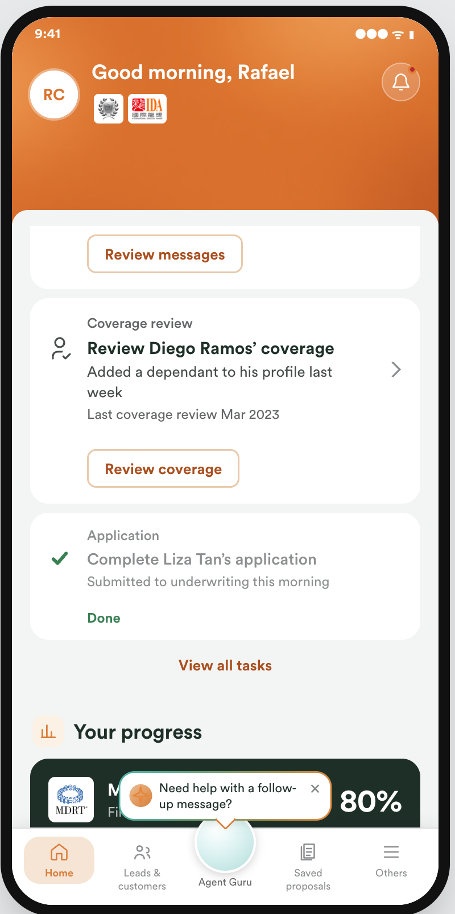
prototype-3-start-with-end.png
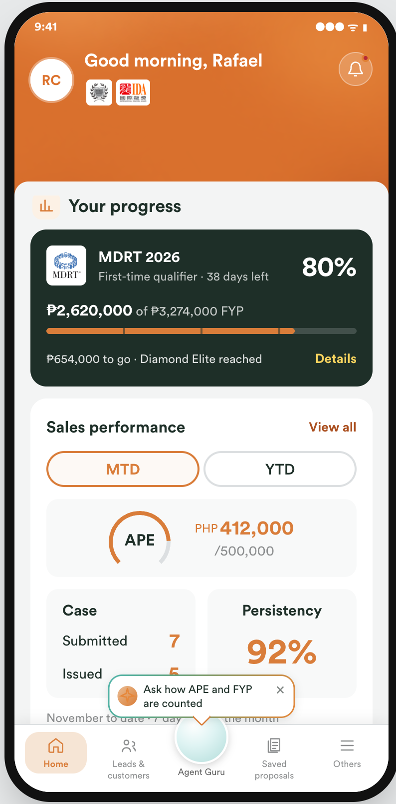
prototype-4-your-progress.png
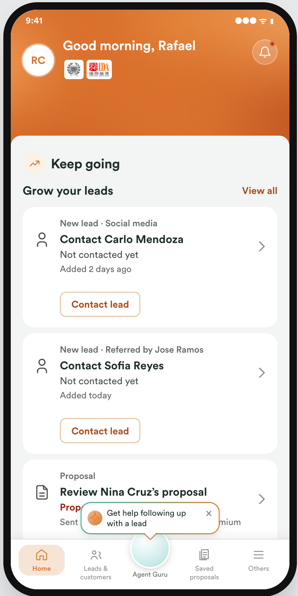
prototype-5-grow-your-leads.png
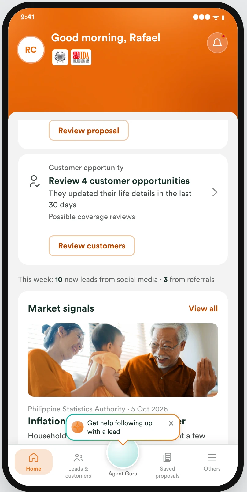
prototype-6-leads-market-signals.webp
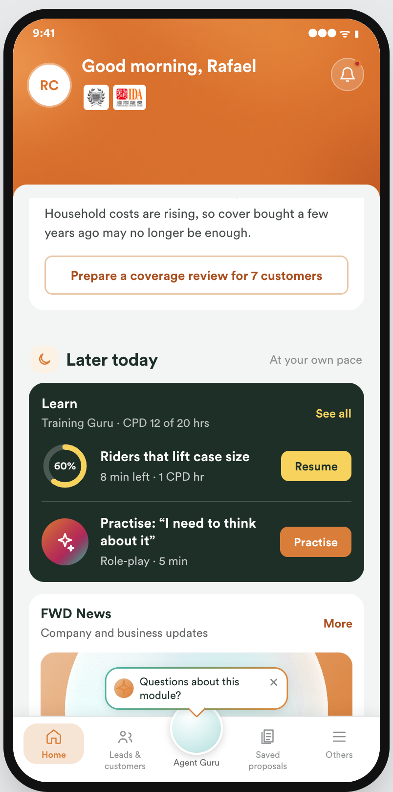
prototype-7-later-today-learn.png
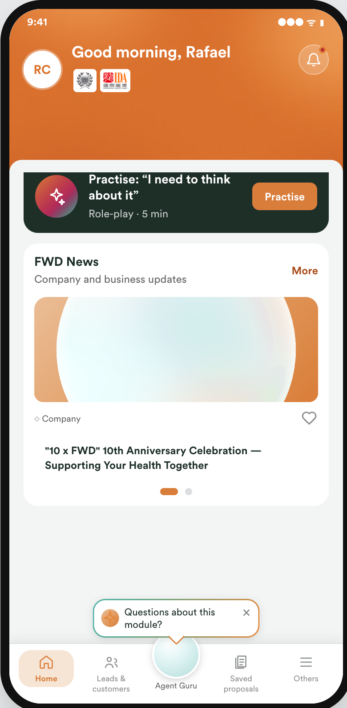
prototype-8-fwd-news.pngExisting CUBE task UI
The current CUBE PH mobile homepage, for comparison. The originals are small exports, so they are shown enlarged; open them for the source file.

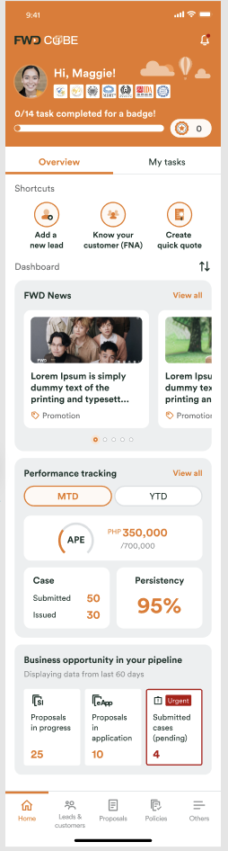
cube-1-home-overview.png
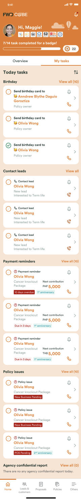
cube-2-home-my-tasks.pngSuggested layouts
Proposed options under review. None of them is in the prototype yet.

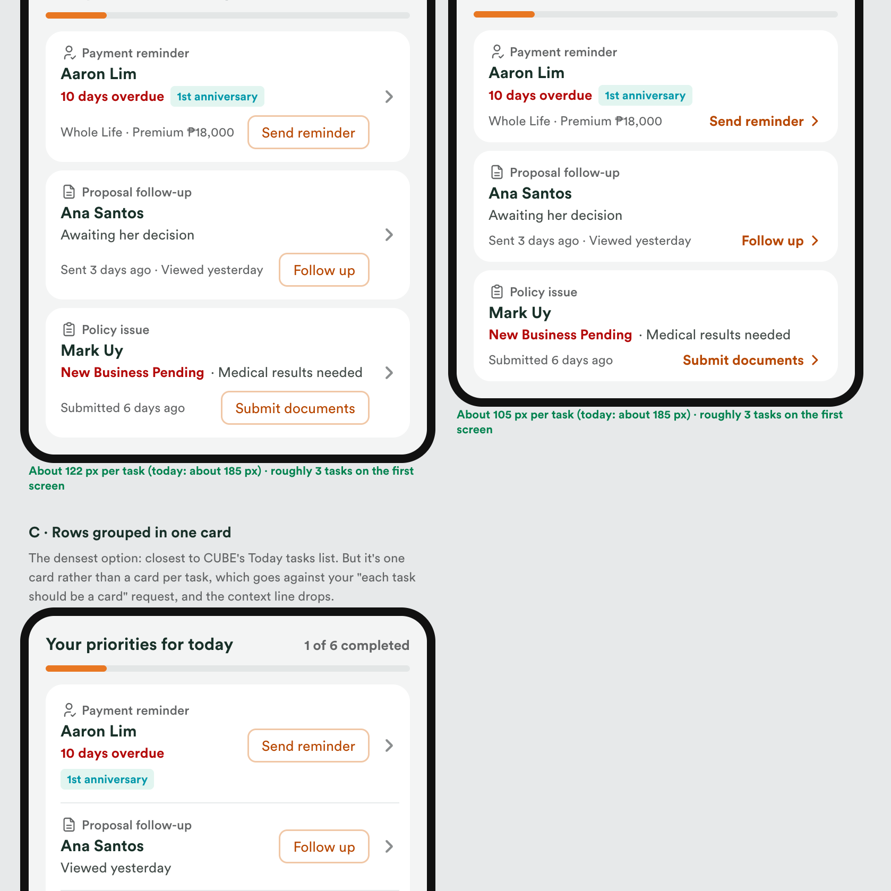
suggested-1-task-card-layouts.png
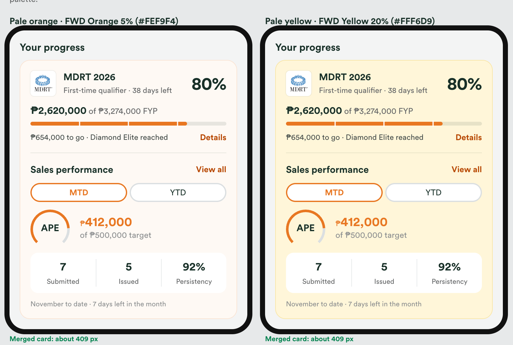
suggested-2-progress-card-tints.png